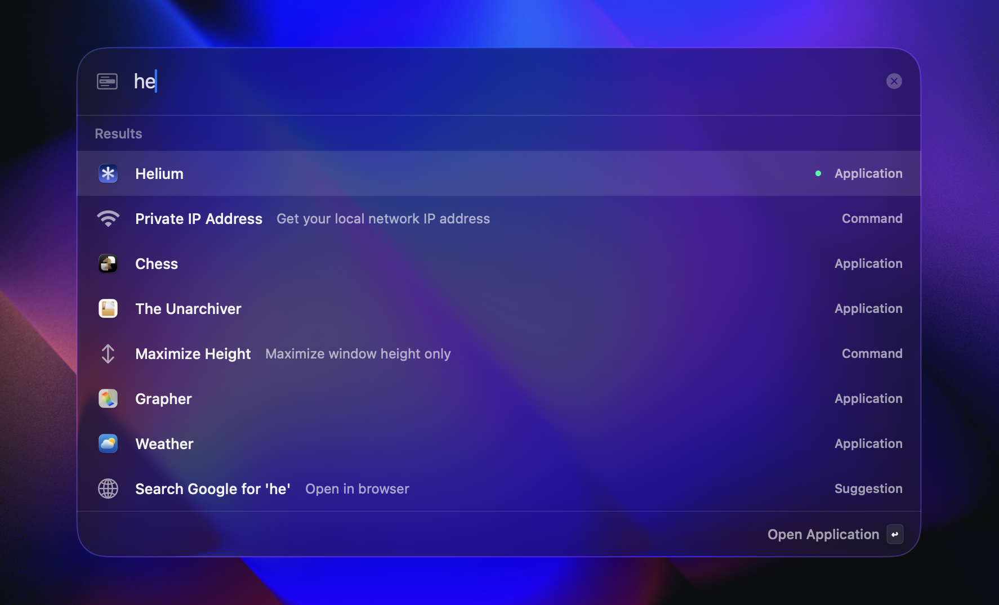

Fast. Native. Lightweight.
Spotlight alternative, shortcut toolkit, and push-to-talk dictation for macOS.
Press ⌥ space (customizable) and get sh*t done.
Or install via Homebrew:
brew install --cask arjunkomath/tap/trace
100% Native Swift · macOS 26+ · Apple Silicon

Everything, one keystroke away
Fast Search
Fuzzy search across all applications with intelligent ranking.
Window Management
Snap windows to halves, thirds, or custom positions instantly.
Quick Links
One-key access to your most-used files, folders, and websites.
Search Menu Items
Find and run commands from the previous app's menu bar without touching the mouse.
Global Hotkeys
Customizable shortcuts for launching apps and managing windows.
Themes
Choose accent colors that tint Trace's foregrounds and Liquid Glass surfaces.
Push-to-Talk Dictation
Hold a hotkey, talk naturally, and drop private on-device transcription right where you are typing.
Remote Settings Sync
Back up and restore your Trace setup through a self-hosted sync server.
Built-in Calculator
Perform calculations directly without opening a separate app.
Calendar Integration
Quick access to your calendar events without leaving the launcher
Emoji Picker
Search and copy from 1550+ emojis with fuzzy search.
Usage Monitoring
See live CPU and memory usage for running apps right in your results.
Keep Awake
Caffeinate your Mac to stop it from sleeping with a single command.
Camera Mirror
Pop up a quick camera preview to check your look before any call.
Native Design
Beautiful interface that respects your system preferences.